Спорт

Ѓорческа избори финале на турнирот во Букурешт
Македонската тенисерка Лина Ѓорческа имаше успешен старт на ИТФ турнирот во Слобозија, Романија. Во следното коло Ѓорческа ќе игра против уште ед...

ЗИДАН СПРЕМЕН ЗА НАЈГОЛЕМИОТ ПРЕДИЗВИК Франција добива нов селектор по Светското во 2026
Претходно, Дидие Дешам изјави дека Светското првенство во 2026 година ќе биде неговиот последен турнир на чело на репрезентацијата. Според , 53 г...

Дончиќ по поразот од Германија: Едноставно сум многу лут, можев да направам повеќе
Дончиќ по поразот од Германија: Едноставно сум многу лут, можев да направам повеќе » :. Најголемата ѕвезда на словенечката кошаркарска репрезента...

(Видео) Волејот на Зубименди му го трасираше патот до победата на Арсенал
Фудбалерите на Арсенал денеска го победија Нотингем форест со 3:0 на домашен терен во Лондон, во натпревар од четвртото коло во Премиер лигата. А...

Дончиќ ја купи куќата на Шарапова за 25 милиони долари
Кошаркарот на Лос Анџелес лејкерс, Лука Дончиќ, ја купи куќата на поранешната светска тенисерка број еден, Марија Шарапова, во Менхетен Бич, објав...

Голманот Гогов го продолжи договорот со Вардар 1961
РК Вардар потпиша нов договор со македонскиот голман Васил Гогов и тој ќе остане дел од „црвено црните“ најмалку до јуни 2027 година. Гогов, кој ...

Хуан Дејвис се врати во МЗТ Скопје
Македонскиот шампион МЗТ Скопје Аеродром, повторно во своите редови ќе го има американскиот кошаркар Хуан Дејвис. Дејвис треба да ја засили играт...

Ивановски и Поп-Арсова Рашиќ македонски претставници на СП во атлетика
Стартот на двете трки е закажан за раните утрински часови по локално време во Токио – 7:30 часот. Светското првенство во атлетика во Токио старту...

Се повреди голманот на Еурофарм Пелистер
Во домашното првенство Еурофарм Пелистер утре ја пречекува екипата на Пролет, а во Лигата на шампионите в четврток гостува кај ПСЖ во Париз. Бито...

Пешиќ: Време е за нов селектор
Му ветив на Човиќ дека целосно ќе ја исполнам улогата што ми ја додели во изборот на нов селектор, изјави Пешиќ. Имено, во вчерашното интервју за...

Сабаленка и Анисимова во финалето на УС Опен
Првата носителка, белоруската тенисерка Арина Сабаленка ќе игра против Американката Џесика Пегула. Двата меча ќе се играат ноќта четврток кон пет...
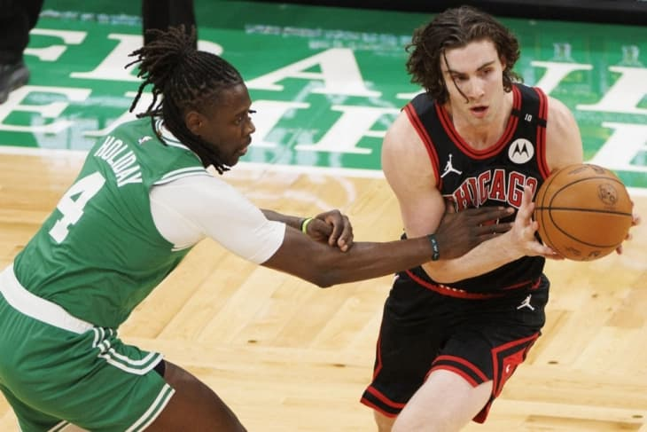
НБА: Гиди уште четири години во Чикаго за 100 милиони долари
Австралискиот бек Џош Гиди ќе остане во Чикаго Булс, франшизата со него потпиша четиригодишен договор вреден 100 милиони долари. Гиди имаше најдо...

Анри: Сите знаат кој ќе биде новиот француски селектор
Анри: Сите знаат кој ќе биде новиот француски селектор » :. Поранешниот француски фудбалски репрезентативец Тиери Анри нема сомнежи дека Зинедин ...
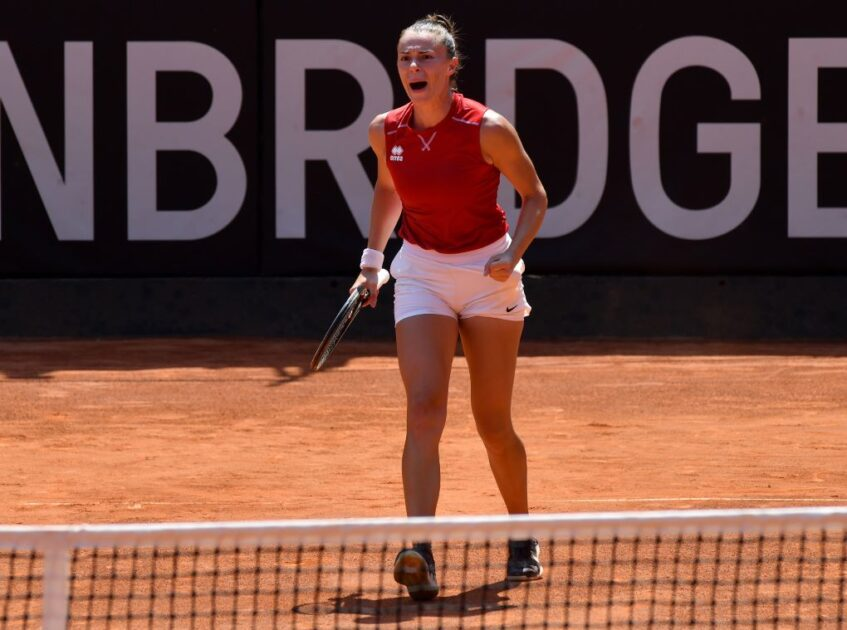
Лина Ѓорческа со уште една голема победа до четвртфинале
Најјдобрата македонска тенисерка лина Ѓорческа продолжува со одличните свој настапи. Таа денеска, во второто коло на овој турнир ја совлада Итали...

Повредата на Чеди Осман е сериозна
Охриѓанецот Џеди Осман, инаку искусен сега веќе репрезентативец на Турција и еден од најдобрите кошаркари на оваа земја во последните години е сер...

Ф4 во Евролигата сепак ќе се игра во Атина
Екипите од Евролигата одлучија завршниот турнир во 2026 година да се одржи во Атина, објавуваат грчките медиуми. На крајот, беше донесена одлука ...
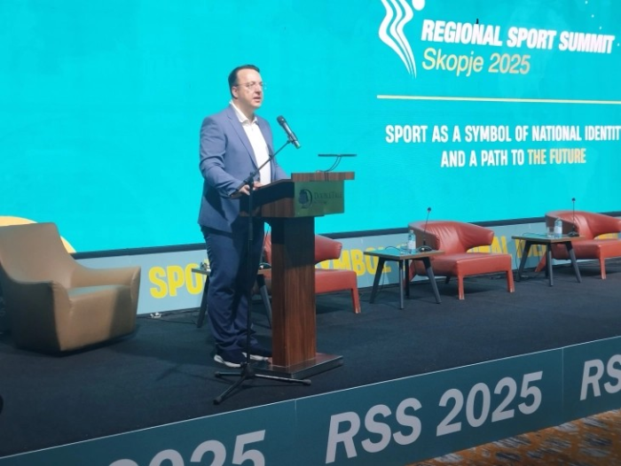
НИКОЛОСКИ: Владата сериозно е посветена на спортот, речиси нема место каде што не инвестираме во развој на инфраструктурата
Вицепремиерот и министер за транспорт, Александар Николоски, во денешното обраќање на „Регионален спортски самит Скопје 2025“ најави уште поголеми...

Газета дело спорт: Ѓоковиќ се пресели во Атина
Поради оваа причина, наведува италијанскиот весник, Ѓоковиќ изминатите неколку недели донесе радикална одлука да го напушти Белград со своето семе...
Слот зборуваше за Исак, но и за неуспешниот трансфер на Гуеи
Ливерпул ќе го пречека Барнли во Премиер лигата во недела од 15:00 часот, а се очекува Исак да дебитира за клубот од „Енфилд“. Арне Слот одржа пр...

Објавени имињата на добитниците на наградата „8 Септември“ за остварувања во областа на спортот
Јошко Миленковски, Хамид Бакија, Зоран Николовски, Виктор Тевчев и Кирил Манев се годинашни добитници на државната награда „8 Септември“, со која ...
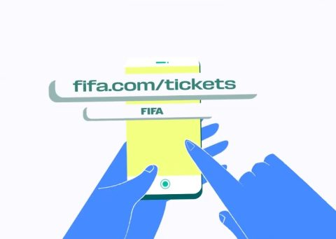
Голем интерес за билети за СП 2026
Иако до почетокот на Светското првенство 2026 година има уште девет месеци, меѓу фудбалските фанови низ целиот свет постои голем интерес за билети...
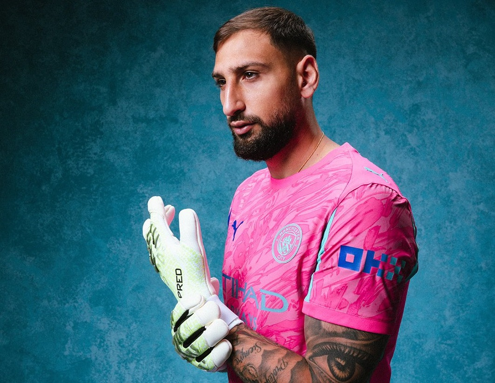
Донарума: Најдобро што може да му се случи на еден фудбалер е да го тренира Гвардиола
Донарума би можел да биде на голот на Сити во недела во 17:30 часот против Манчестер јунајтед, а по потпишувањето рече:</p> <p>„Да бидеш трениран ...

„НАЈДОБАР ИГРАЧ НА СИТЕ ВРЕМИЊА“ Роналдо сега има и доказ дека му нема рамен
Кристијано Роналдо ја освои наградата Најдобар играч на сите времиња. Фудбалерот на Ал Наср, Кристијано Роналдо, ја доби наградата „Најдобар игра...

Скопје ќе биде домаќин на Европски куп во џудо
Џудо федерацијата на Македонија со гордост најавува уште еден врвен спортски настан во нејзина организација – Сениорскиот Европски куп во џудо, ко...

Бецеки победи во спринт трката во Мизано
Најпрвин Маркез го мина Бецеки, а во истиот круг лидерот во вкупниот пласман, излета од патеката. На патакета во Мизано, Бецеки победи пред Алекс...
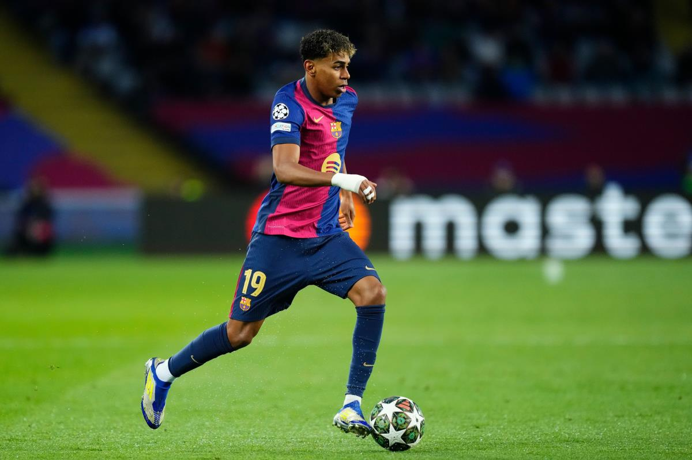
Баерн сакаше да го потпише Јамал кога имаше 14 години, трансферот пропадна поради промена на агентот
Баерн имал долгорочен план, да го пресели семејството на Јамал во Германија, да почека додека играчот не наполни 16 години и да плати околу пет ми...
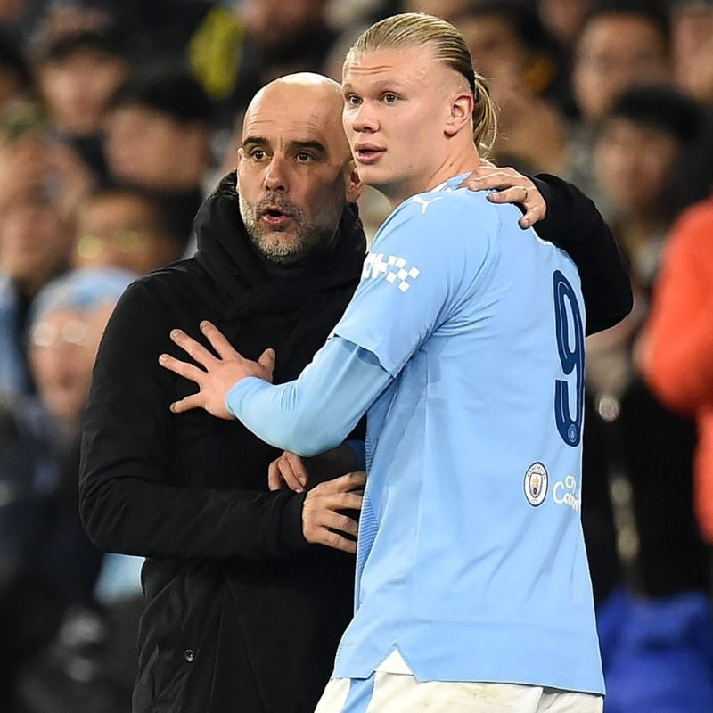
Гвардиола: Халанд е пред Исак
Досега одигра 149 натпревари и постигна 127 гола во дресот на Сити. Исак е исклучителен играч, но ме прашавте за Ерлинг и тој е на врвот“, рече Г...
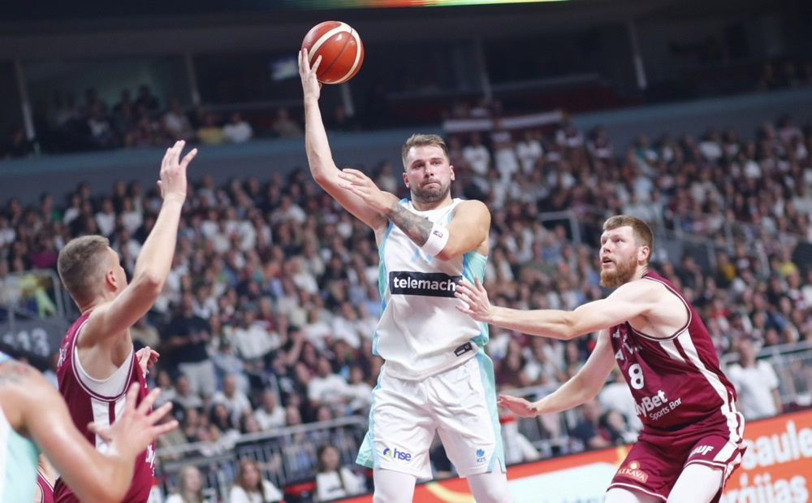
Дончиќ: Вакво нешто никогаш не ми се случило во животот
За потсетување, тој доби техничка грешка веднаш на почетокот, а потоа уште една лична грешка во првите три минути. Словенија водеше во поголемиот...
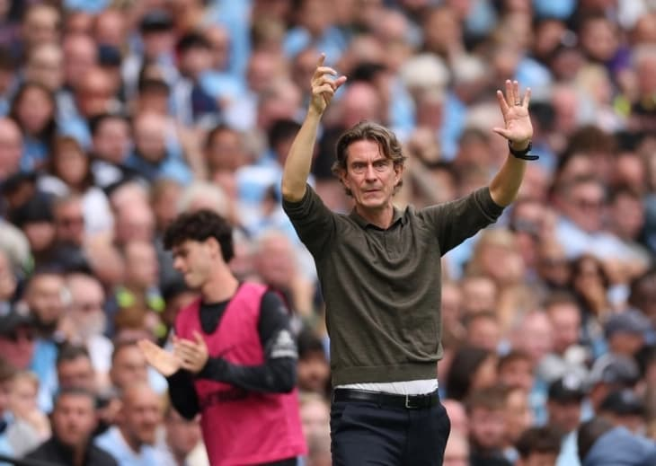
Тренерот на Тотенхем предлага воведување „тајм аут“ во фудбалот
Јас би вовел тајм аут за време на секое полувреме. Франк го презеде Тотенхем ова лето откако седум години го водеше Брентфорд, а пред тоа Брондби...

Евробаскет 2025: Германија остана без селекторот
Шпанецот Алекс Мумбру имаше проблеми пред почетокот на првенството кога беше примен во болница. Изминативе денови увидов дека физички не сум подг...

Петар и Павле Атанасијевиќ ги продолжија договорите со Еурофарм Пелистер
Петар и Павле Атанасијевиќ ги продолжија договорите со Еурофарм Пелистер :. Браќата близнаци Петар и Павле Атанасијевиќ, кои се на возраст од 22 ...

ГРК Охрид со голем исчекор кон финалето на турнирот „Крсте Андоновски“
Охрид во последното коло од групната фаза се среќава со Нексе и доколку забележи победа ќе игра во големото финале што на програмата е во сабота. ...
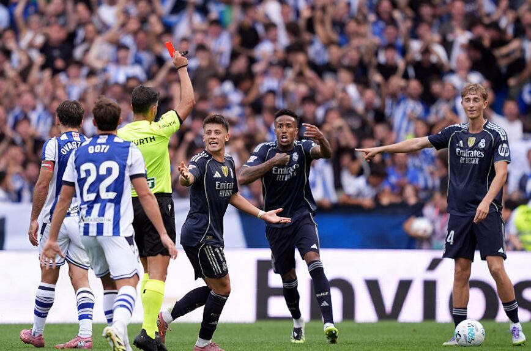
(Видео) Реал со играч помалку победи во Сан Себастијан
Во тој момент, Реал имаше предност благодарение на голот на Килијан Мбапе во 12-та минута. Во раната фаза на второто полувреме Сосиедад добија пе...

Пешевски: Заслужено ги освоивме бодовите!
Пелистер Жарко Пешевски, беше презадоволен од победата над Загреб на отворањето на новата сезона во Лигата на шампионите, истакнувајќи дека негови...

Евробаскет 2025: Турција ја победи Србија за прво место во групата
Пласман помеѓу 16 те најдобри на Евробаскетот од оваа група изборија и ко домаќинот Летонија, како и Португалија. Другите осум учесници во 18фина...
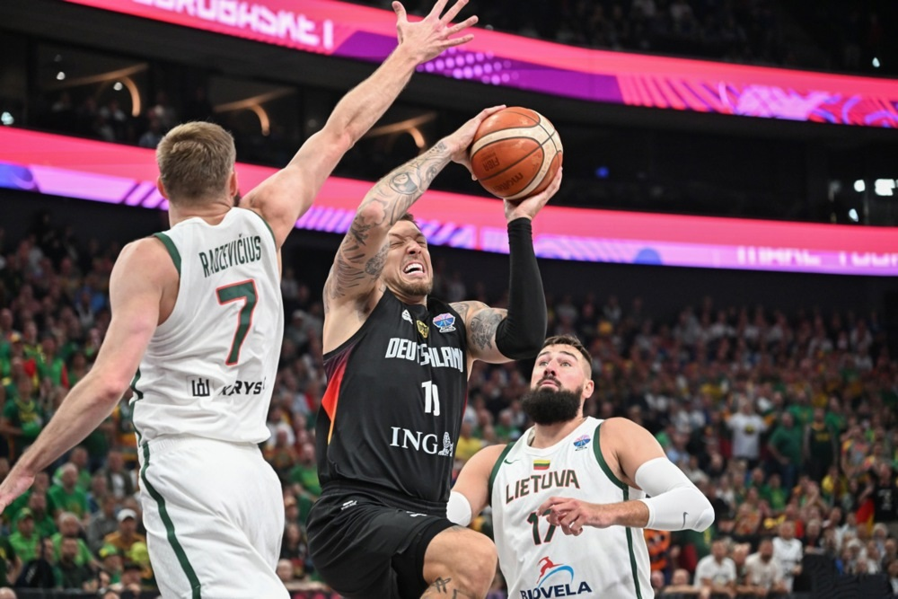
Германија последен полуфиналист на Евробаскетот
Репрезентацијата на Германија е последниот патник во полуфиналето на завршницата на Европското првенство кое што се игра во Рига, откако вечерва у...

Промена на правилата на НБА- Во иднина сигурно повеќе ќе се шутира од центарот на теренот
Според новото правило, секој шут направен во последните три секунди од првите три четвртини од повеќе од 11 метри (36 стапки) ќе се смета за тимск...

Алекс падна, Марк најбрз во спринтот во Каталуња
МотоГП: Алекс Маркез обезбеди пол позиција за Големата награда на Каталонија. Возачот на Дукати, Марк Маркез ја освои Големата награда на Унгариј...

Хамилтон: Ферари се движи во вистинската насока
Тој возеше за Ферари во сезоната 1992 (која вклучуваше 14 етапи) без ниту еден подиум. Британецот е во серија од 15 трки за Ферари без подиум, шт...
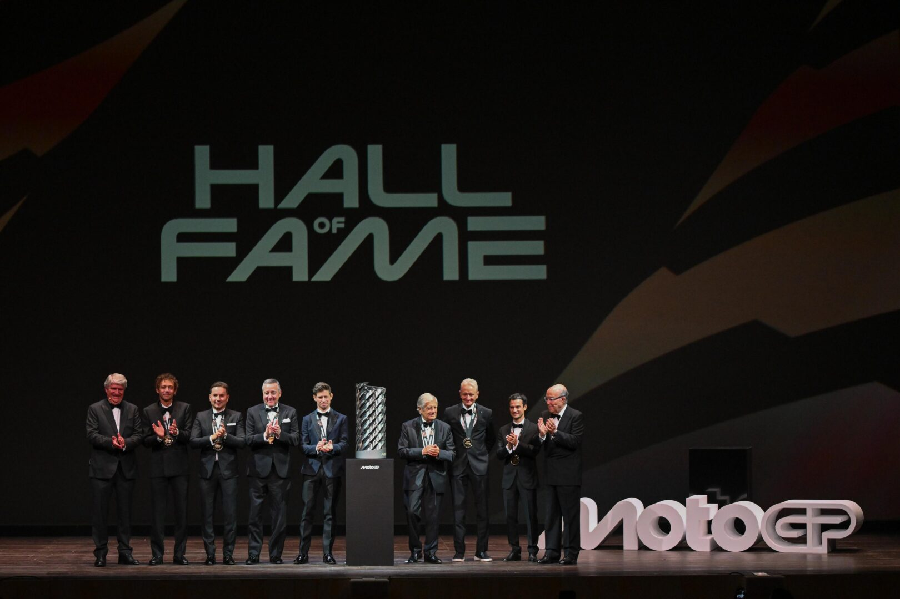
Мото ГП сега има Куќа на славните
Мото ГП шампионатот и досега имаше посебно место за своите легенди, а од четврток има и официјална Куќа на славните, која беше откриена во пресрет...

Познати осминафиналните дуели на Евробаскетот
Осминафиналните пресметки на Евробаскетот ќе стартуваат в сабота кога на програмата се дуелите Србија Финска, Германија Португалија, Литванија Лет...
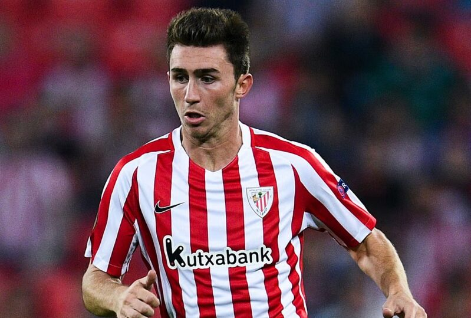
ФИФА пресуди – Лапорт се враќа дома
Лапорт успеа во намерата да се врати на „Сан Мамес“, каде што помина шест години, пред да замине во Манчестер сити во 2018 година. Францускиот Ба...

Светската атлетика ја продолжи суспензијата за Русија и Белорусија
Потребно ни е мирно решение, изјави претседателот на Светската атлетска федерација Себастијан Коу, осврнувајќи се на војната што Русија ја води во...
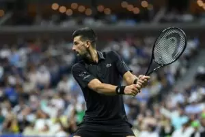
Ѓоковиќ: „Синер и Алкараз се едноставно предобри“
Едноставно тие се предобри“, изјави српската тениска легенда, додавајќи дека ужива во поддршката од публиката и планира да продолжи да игра и след...

ВИДЕО | Турција ја декласираше Грција и закажа финале со Германија на Евробаскет
За Грција, Костас Слукас имаше 15 поени со три скока и четири асистенции, а Јанис Адетокумбо имаше дабл-дабл со 12 поени и 12 скока, 11 поени уфрл...

Анчелоти за Нејмар: „Во денешниот фудбал мора да бидете во добра форма“
Ако Нејмар е во добра физичка форма, нема да има проблем да биде дел од репрезентацијата, рече Анчелоти во интервју за ESPN Бразил. Сепак, во ден...
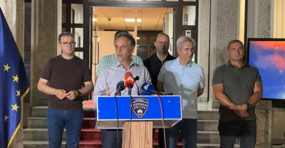
Алиу: Земен е материјал од акредитирана институција и до понеделник ќе имаме резултати за воздухот
За состојбата на воздухот, информации ќе има до понеделник. Од акредитирана институција, земен е материјалот, до понеделник ќе имаме резултати и ...

Сиљановска-Давкова ги додели наградите на победниците на 38. Охридски пливачки маратон
Гордана Сиљановска Давкова награди маратон Сиљановска Давкова им честитала на победниците и на сите учесници на маратонот, изразувајќи им признани...

Евробаскет: Историско полуфинале за Финска
Финска до победата ја предводеа Микаел Јантунен со 19 поени и пет скокови, Лаури Марканен со 17 поени, шест скокови и две асистенции и Едон Маџуни...

Реми на Алкалоид и Охрид во „Автокоманда“!
Гостите за прв пат се непоразени во домот на Алкалоид, во 13 одиграни меѓусебни средби. Алкалоид и ГРК приредија атрактивен дуел кој ја исполни п...

Ферстапен ја освои Монца пред возачите на Мекларен
Подиумот го пополнија возачите на Мекларен, Британецот Ландо Норис ја помина целта втор, а Австралиецот Оскар Пјастри трет. Холанѓанецот Макс Фер...

Арка-Борец балкански шампион во кајак на диви води
Со овој успех велешкиот клуб уште еднаш потврди дека е лидер во регионот, а младите таленти од ККК Арка Борец се иднината на македонскиот кајак, и...
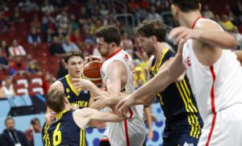
Судир на титаните во полуфиналето на Евробаскет: Турците загрижени поради Осман, Грците се потпираат на Адетокумбо
Грција ја победи Литванија со 87:76 во четвртфиналето, предводена од Јанис Адетокумба, чии поени на крајот го решија натпреварот. Во последните о...

НЦАА поведе истрага против 13 кошаркари за нелегално обложување
НЦАА соопшти дека дознала за невообичаена активност на обложување преку својата програма за следење, а истрагата за поранешните играчи е фокусиран...
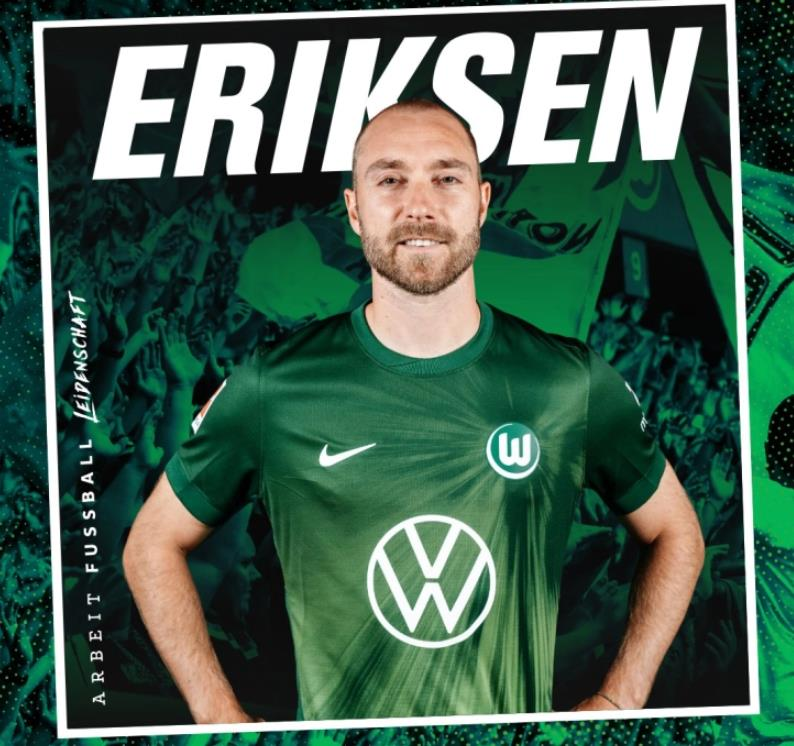
Ериксен потпиша за Волфсбург
Триесетитригодишниот Ериксен претрпе речиси фатален срцев удар за време на натпреварот од Евро 2021 против Финска, а се врати во фудбалот откако м...
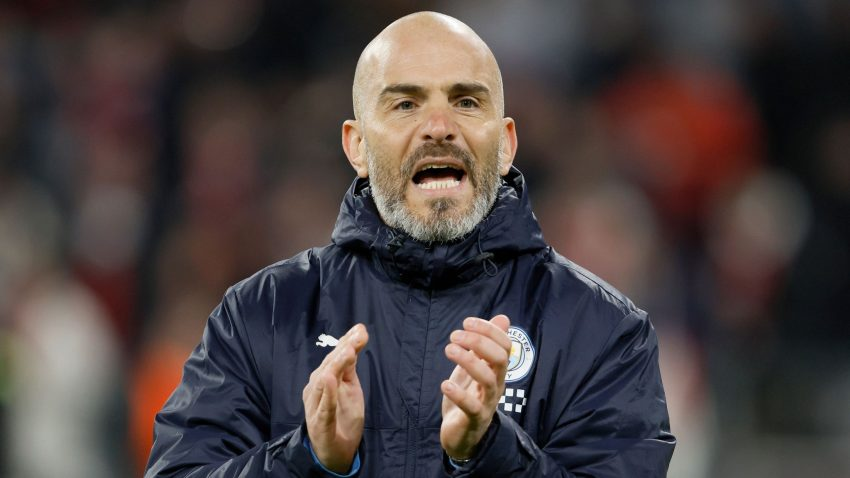
Мареска засекоаш ги отпишал Стерлинг и Дисаси
Рахим Стерлинг и Аксел Дисаси повеќе не се дел од првиот тим. Играше 61 пат за Челзи, постигна пет гола и имаше две асистенции, а минатата сезона...

Кузмановски: Сакаме со позитивен резултат да ја почнеме ЛШ
Не треба да зборуваме за историјата на Загреб, мотивирани сме и сакаме со позитивен резултат да ја почнеме Лигата на шампионите. Максимално се по...

Анчелоти сака да остане селектор на Бразил до 2030 година
Подготовките за Светското првенство се нешто посебно за бразилската репрезентација. Бразилците се квалификуваа на Светското првенство 2026 година...

Во Битола по пауза од 31 година попладне ќе се игра меѓународен фудбалски натпревар
Попладне во Битола, по пауза од 31 година, повторно ќе се одигра меѓународен фудбалски натпревар на кој ќе настапат младинските репрезентации на М...

(Видео) Тотенхем за 20 минути го декласира Вест Хем
Фудбалерите на Тотенхем, како гости, го победија Вест Хем во градското дерби (3:0), во четвртото коло од Премиер лигата. Вест Хем има само три бо...

Пелистер со победа ја започна сезоната во Лигата на шампионите
Со два гола гостите го заклучија првиот дел (13:12). Пелистер одговори со три гола (19:18), а во последните 10 минути домашните влегоа со преднос...

Гарабаја: Ми кажуваа, ама додека не доживееш лично – не знаеш каква е магијата во Битола
Мораме да размислуваме од натпревар во натпревар, следен е ПСЖ, но секогаш мора да уживаме и во победата. Пелистер сосема заслужено стигна до бод...
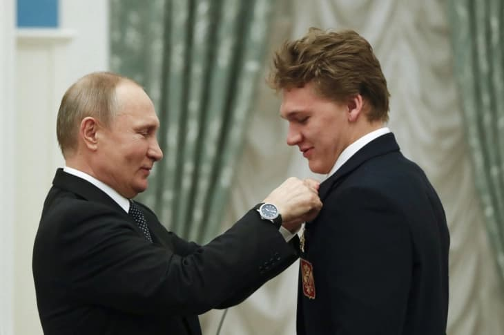
Русинот Капризов го одби најголемиот договор во историјата на НХЛ
Според телевизијата ТСН, Капризов, наводно, ја одбил понудата вредна 128 милиони долари за осумгодишно продолжување на соработката со НХЛ лигашот ...
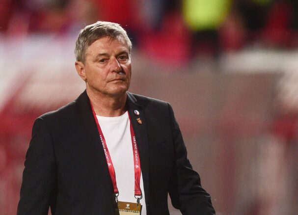
Пикси мора да ја победи Албанија ако сака да остане селектор
Сега, за само три недели, имаме собир за најважниот натпревар во квалификациите, за натпреварот со Албанија, кој директно ќе одлучи кој ќе оди во ...

Меси за прв пат во кариерата стана најдобар стрелец во квалификациски циклус за Светското првенство
Триесет и осумгодишниот напаѓач постигна осум гола и имаше три асистенции во 12 натпревари од квалификацискиот турнир за Светското првенство 2026 ...
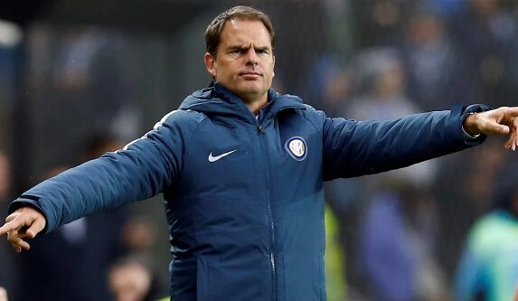
Мело за Де Бур: Никој не можеше да го поднесе
Фелипе Мело одигра вкупно 38 натпревари за Интер, постига еден гол. Бразилецот рече дека „никогаш не го разбирал фдбалот“ и дека „никој во соблек...

Стадион „Петар Милошевски“ подготвен за спектакл: Македонија – Италија U21 во 18:15 часот
Стадионот „Петар Милошевски“ во Битола е целосно подготвен да го пречека вечерашниот спектакл меѓу младите репрезентации на Македонија и Италија д...

Ѓорѓовски: Се трудам да го дадам максимумот на секој тренинг
Но, секогаш има и по некое изненадување плус, не смее да се потцени ниту еден тим, изјави Ѓорѓовски Алкалоид веќе неколку дена е на базични подгот...

Гвардиола: Нема да го терам Донарума да прави работи што не му се допаѓаат
Нема да барам од Донарума да прави работи што не му се допаѓаат. Не го зедовме Донарума да го прави она што го правеше Едерсон. Дваесет и шестго...

Дончиќ ја купи куќата на Шарапова за 25 милиони долари
Дончиќ ја купи куќата на Шарапова за 25 милиони долари</a> appeared first on <a href="https://libertas. Кошаркарот на Лос Анџелес лејкерс, Лука Д...
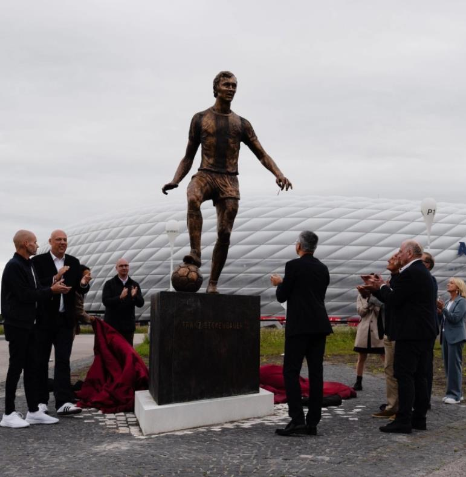
Споменик на Бекенбауер откриен во близина на стадионот на Баерн
Тој го симболизира Бекенбауер и с што тој претставуваше: стил, карактер, Баерн. Со тимот од Минхен, Бекенбауер четири пати го освои германското п...
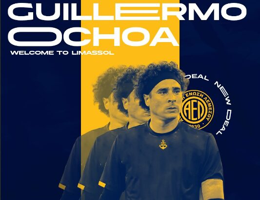
Очоа ќе брани за АЕЛ Лимасол
Гиљермо Очоа има сериозни планови да настапи на Светското првенство во 2026 година. Искусниот мексикански голман потпиша за АЕЛ од Лимасол и ќе б...
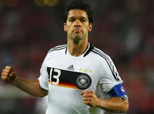
Балак: Бундеслигата е инфериорна во однос на Премиер лигата многу години, Вирц немаше смисла да се пресели во Баерн
Дали Бундеслигата е с уште предизвик за него на највисоко ниво? Затоа германското првенство генерално повеќе не е привлечно за играчи од највисок...

Oва менува сѐ: Србија остана без Богдан Богдановиќ
Капитенот на српската репрезентација, Богдан Богдановиќ, нема да игра во продолжението на Европското првенство поради повреда на тетивата што ја з...

Сабаленка ја освои втората последователна титула на УС Опен
Сабаленка ја потврди доминацијата и го доби тај брејкот со 7:3 на поени и притоа има изгубено само еден тај брејк во 2025 година од 22 одиграни. ...

Жезус и Тросар ќе го напуштат Арсенал
Двајца играчи на Арсенал, Бразилецот Габриел Жесус (28) и Белгиецот Леандро Тросард (30), ќе бидат на трансфер листата во зимскиот преоден рок, об...

РФМ: Горди сме што Македонија е домаќин на првото издание на Ракометен регионален турнир
Горди сме што Македонија е домаќин на првото издание на Ракометен регионален турнир. На овој турнир во машка конкуренција ќе настапат РК Еурофарм...

Алкалоид по два месеца го доби шампионскиот пехар за триумфот во ЕХФ Европскиот куп
Пехарот вечерва на капитенот на Алкалоид Игор Ѓорѓиев го предаде Божидар Ѓурковиќ претставникот од ЕХФ. Алкалоид имаше предност и победа од првио...

Kако гореше околу „Борис Трајковски“ додека се играше ракомет
Полициски службеници спречија ширење на пожар на СЦ Борис Трајковски, евакуирана публиката, девет полициски службеници завршија на токсикологија<...

Ферари останува без двајца клучни инжинери
Цимерман, лидер на проектот за погонски единици на Ферари, се смета за вистински иноватор во светот на моторите во Ф1. Двајца истакнати експерти ...
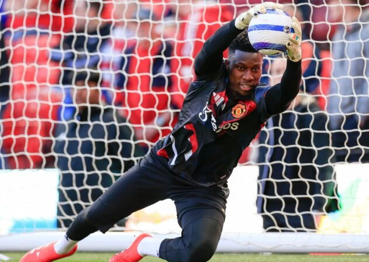
Јунајтед го испрати Онана во Трабзон
По низа грешки, Онана го изгуби местото на голот на Јунајтед, а оваа сезона одигра само еден натпревар за Манчестер Јунајтед, во Лига купот, во по...
Ридигер ќе паузира до три месеци
Како што објави Реал Мадрид во официјалното соопштение, Ридигер се пожалил на болка во квадрицепсот за време на тренингот, по што веднаш отишол на...

Лазаров: Честитки за Хановер, заслужено победија
Сакам да им честитам на Хановер за победата и да им посакам среќа во групната фаза на ЕХФ Европската лига. Хановер е противник кој победува екипи...

Мбапе: Многу сум среќен што го надминав достигнувањето на Анри но сепак имам уште една личност што треба да ја престигнам
Капитенот на Франција, Килијан Мбапе, по натпреварот против Исланд (2:1) во квалификацискиот турнир за Светското првенство во 2026 година, истакна...

Лазаров пред реваншот со Хановер: Достоинствено да го презентираме македонскиот ракомет
Во сабота е убав ден, затоа што ќе го подигнеме европскиот пехар кој го освоивме лани со македонски тим, кој постои три години во Суперлигата и уш...
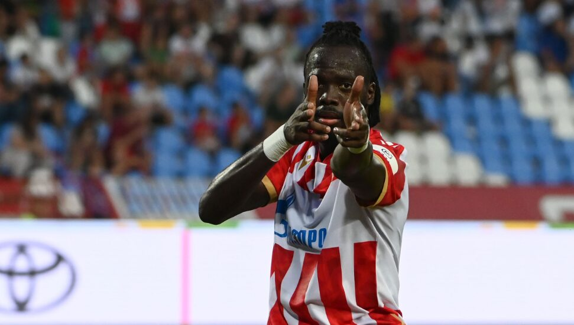
Црвена звезда го продаде најдобриот стрелец
Најдобриот стрелец на Црвена звезда во минатата сезона, Шериф Ендиај, кариерата ќе ја продолжи во Турција. Црвена звезда го продаде напаѓачот од ...

Koга играат Еурофарм и Вардар секогаш е дерби
Во претсезонските натпревари, вечните ривали се сретнаа два пати, и во двата наврата победија битолчани па поради подобрата форма влегуваат како ф...
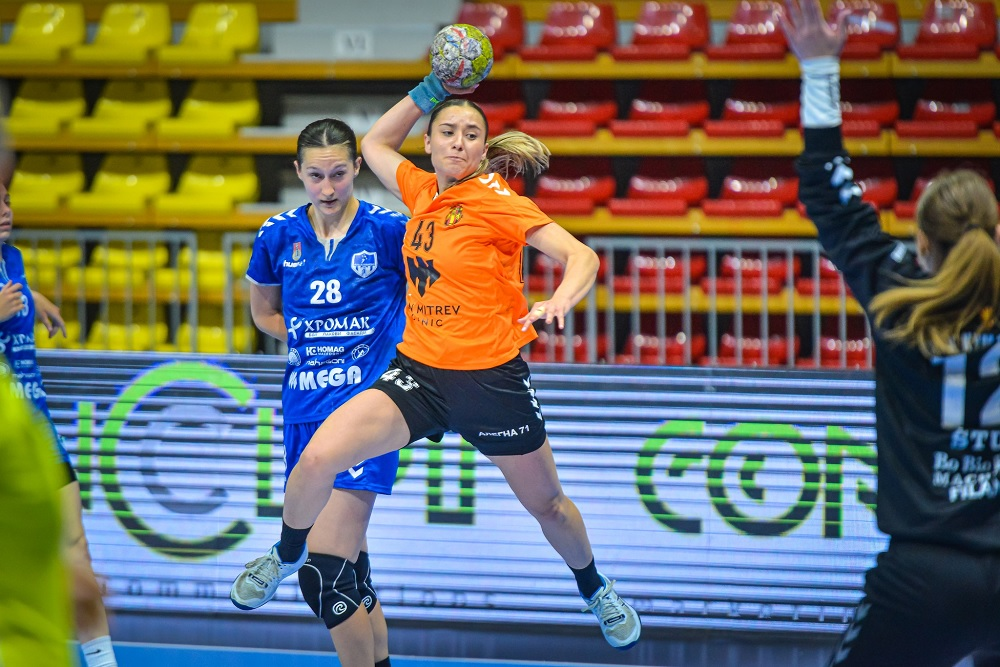
ЖРК Ѓорче Петров го победи ЖРК Куманово
Ракометарките на ЖРК Куманово со сигурна игра во второто полувреме славеа над ЖРК Куманово со 31 21 во првото коло од женската Супер Лига. На пау...
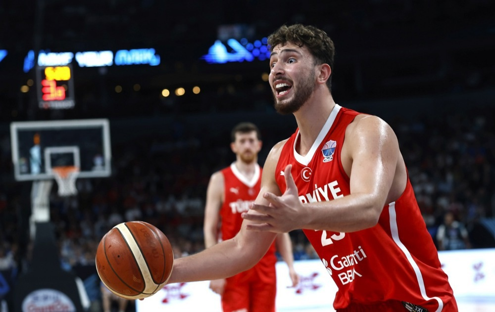
Објавата на Шенгун по победата над Грција предизвика бројни реакции
Иако сè уште непотврдено, на социјалните мрежи се објавува и дека турските коментатори, следејќи го „рецептот“ на Шенгун, дале слични коментари „г...
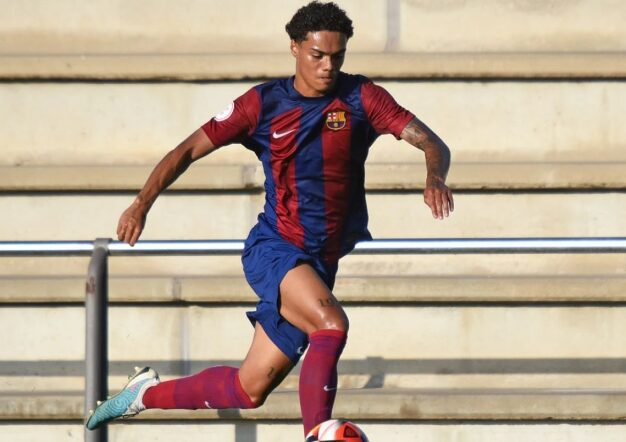
Синот на Роналдињо во Чемпионшип
Англискиот клуб, член на Чемпионшип, со пораката „Добредојде Жоао“, го официјализираше трансферот на фудбалерот кој ќе се обиде да се докаже во но...

Ф1: Пјастри ја освои ГН на Холандија
На девет трки до крајот, Пјастри ја зголеми својата предност во генералниот пласман и сега води со 309 поени, 34 повеќе од Норис, додека Верстапен...
Манчестер Јунајтед ја пронајде замената за Бруно Фернандеш
Манчестер Јунајтед со големо внимание ја следат ситуацијата околу големиот талент од редовите на каталонскиот гигант Барселона, Дро Фернандез. Ст...
Алонсо го избрка Ридигер од тренингот на Реал Мадрид
Меѓу нив е и Антонио Ридигер, кој неодамна влезе во жестока расправија на тренингот на Реал Мадрид со Винисиус Жуниор. Ридигер подоцна им се изви...
Првпат во Македонија: Ласерска интервенција за аблација на варикозни вени достапна за пациентите
Во Македонија од денеска е достапен третман кој претставува вистинскинапредок во понудата на медицински услуги – ласерска интервенција за аблација...

Алекс конечно го победи постариот брат во главна трка
Третата позиција ја освои звонредниот Бастијанини, кој стартуваше од деветтото место, а на крајот заврши на подиумот. Возачот на Гресини ја освои...

Македонија домаќин на Светско училишно првенство во ракомет 2026
Договорот за организација на првенството беше официјално потпишан од страна на министерот за спорт Борко Ристовски, претседателката на Федерацијат...
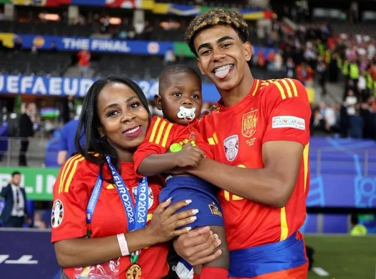
Јамал: Спиевме во кујната, штом заработив пари, ѝ реков на мајка ми да избере нова куќа
Не сонувам да имам една Златна топка, туку да имам многу. Младиот ас зборуваше за својата мајка, образованието, но и за својот прв тренинг со кат...

Алекс падна, Марк најбрз во спринтот во Каталуња
Возачот на Дукати, Марк Маркез, победи во спринт трката како дел од Големата награда на Каталуња во шампионатот Мото ГП. Марк Маркез ја однесе св...